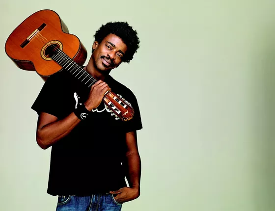

Tudo começou de forma simples, como uma banda de garagem, onde a paixão pela música nos unia em cada ensaio. Aos poucos, fomos conquistando espaço, reconhecimento e público. Hoje, já tivemos a honra de nos apresentar em grandes eventos por todo o estado, sempre com a mesma energia de quando tudo começou. Nosso repertório é a nossa marca: versátil, dinâmico e sempre personalizado. Tocamos desde o rock clássico até a MPB, nos adaptando ao estilo de cada cliente e à atmosfera de cada ocasião. É essa flexibilidade que faz com que cada apresentação seja única, conectando som e emoção de forma autêntica.
Para saber mais sobre nosso começo clique aqui.
Marcos, líder da banda, vive a mais de quinze anos animando festas, casamentos e eventos corporativos. Sempre com o mesmo objetivo transformar momentos especiais em lembranças inesquecíveis.
Roberto, compositor, violonista e grande companheiro de Marcos. Juntos desde 2010, trazendo mais alegria e memórias as pessoas.